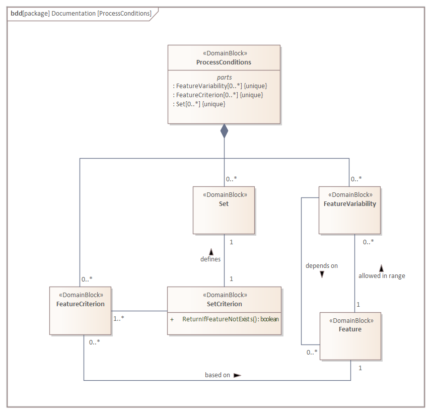

Concepts¶
As demonstrated in the Tutorials section, you would mainly define the
synthetization directives in a recipe file called the SynthRecipe. In this section,
we will give an overview of the building blocks of the said recipe file. Subsequently,
we will also describe the plugin mechanism. Plugins are the chosen approach to enable
using self-defined .blend-files in the synthetization process.
Domain Knowledge¶
To use the synthpic2 toolbox, you would have to provide a recipe containing the
specific components and commands for the toolbox to produce synthesized particle images.
This recipe is named as SynthRecipe and should be defined in the form of a
.yaml-file that resides inside a config-directory that can be reached from the
project directory. The recommended directory for the recipes is the ./recipes folder
inside the project directory as stated in the Tutorials section.
{kind=link}
As depicted in the Block Definition Diagram (BDD) above, a SynthRecipe is composed
of four building blocks, namely one InitialRunState, one Blueprints, one
ProcessConditions, and last but not least one SynthChain. This definition of a
SynthRecipe can be translated directly into the structure of the recipe.yaml
file.
1 2 3 4 5 6 7 8 9 10 11 | initial_runtime_state:
<building blocks of InitialRunState>
blueprints:
<building blocks of Blueprints>
process_conditions:
<building blocks of ProcessConditions>
synth_chain:
<building blocks of SynthChain>
|
The InitialRunState contains the initial conditions as the program starts. In the
following example, the variable time and seed are defined. The variable time
gives the possibility of running dynamic simulation in the future. seed is a number
used to initialize a pseudorandom number generator. With it, we are able to manage the
random states of the particles.
1 2 3 | initial_runtime_state:
time: 0.0
seed: 42
|
As of the rest of the building blocks, the Blueprints defines the characteristic of
the particles and the measurement technique as a single element. The
ProcessConditions assigns the attributes of the interactions between the particles
and the measurement technique. The SynthRecipe contains the steps required to set up
the particles to final image rendering. These building blocks will be described in more
details in the following subsections.
Blueprints¶
A synthesized particle image requires three physical entities at its most granular
level: a particle or a swarm of particles, a camera that captures the particle image,
and a medium where the particles and the camera are located. Each of these entities
possesses specific characteristics that directly influence the image, such as the form
of the particle, the surface texture of the particle, the refractive index of the
medium, et cetera. These attributes are defined in the Blueprints.
The following BDD shows the structure of the Blueprints.
{kind=link}
The Blueprints consists of at least one MeasurementTechniqueBlueprint and
zero or more ParticleBlueprint. Because one measurement technique is always
required to capture an image, the multiplicity of each blueprint makes sense. The
absence of particles simply means that the resulting image is devoid of particles.
Each of these blueprints is defined from Prototypes. We distinguish three prototypes
in our toolbox: MeasurementTechniquePrototype, MaterialPrototype, and
GeometryPrototype. The CompositingPrototype is a planned feature that might be
implemented in the future.
We provide several Prototypes inside the folder ./prototype_library. Each of the
prototype resides in the corresponding subfolder (./prototype_library/geometries,
./prototype_library/materials, ./prototype_library/measurement_techniques) and
defined as a pair of a .blend-file and a .yaml-file. The .blend-file
is the native file format from Blender and contains the 3D-information of each prototype.
Below is an example of Blueprints taken from secondary_electron_microscopy.yaml
recipe. In this example, one measurement technique blueprint with the name SEM and
one particle blueprint Bead are defined. The SEM blueprint is defined from the
secondary_electron_microscope
(./prototype_library/measurement_techniques/secondary_electron_microscope.blend) as
the measurement technique itself and sem_patchy_silicone
(./prototype_library/materials/sem_patchy_silicone.blend) as the material of the
continuous phase.
1 2 3 4 5 6 7 8 9 10 11 | blueprints:
measurement_techniques:
SEM:
measurement_technique_prototype_name: secondary_electron_microscope
background_material_prototype_name: sem_patchy_silicone
particles:
Bead:
geometry_prototype_name: sphere
material_prototype_name: sem_polystyrene
parent: MeasurementVolume
number: 600
|
Similarly, the Bead particle blueprint is defined from the sphere geometry
prototype and sem_polystyrene as its material. Additionally, the attributes
parent and number have to be set for each particle blueprint.
Process Conditions¶
{kind=link}
Under the ProcessConditions, we would define the FeatureCriterion, Set, and
FeatureVariability. A FeatureCriterion is a custom criterion to filter out the
elements inside the image. In the example below, the criterion IsBead filter out
blueprints with the name Bead. A Set represents a pool of elements with one or
more criteria. For example, the Beads set is a pool of particles that fulfills the
criteria IsParticle and IsBead. The FeatureVariability defines the
variability that can be applied to the specified set in the SynthChain afterwards.
1 2 3 4 5 6 7 8 9 10 11 12 13 14 15 16 17 18 19 20 21 22 23 | process_conditions:
feature_criteria:
IsBead:
_target_: $builtins.ContainsString
feature_name: blueprint_name
search_string: Bead
default_return_value: False
sets:
Beads:
criterion: $IsParticle and $IsBead
feature_variabilities:
ParticleDimension:
feature_name: dimensions
variability:
_target_: $builtins.UniformDistribution3dHomogeneous
location: 5
scale: 2
ParticleSubdivisions:
feature_name: subdivisions
variability:
_target_: $builtins.Constant
value: 1
...
|
Note that there are built-ins process conditions that can be called in the recipe
directly, such as the feature criterion IsParticle or the set AllParticles.
There are also built-ins feature variabilities used in the example above
(builtins.UniformDistribution3dHomogeneous or builtins.Constant). Please refer
to References for the built-in components.
We also provide the possibility to write your own feature variabilities as python classes as a plugin (see Plugin Mechanism below).
Synth Chain¶
After the Blueprints and the ProcessConditions for the synthesizing process are
defined, the SynthChain would define the instructions for the toolbox to go from an
empty blender scene to a rendered image of particles. These instructions are generally
classified into FeatureGenerationStep and RenderingStep.
{kind=link}
The FeatureGenerationStep is in general an instruction that is applied on the
pre-defined Set. For example, the step InvokeBlueprints below adds the particles
in the set AllParticleBlueprints into the blender scene. The
TriggerFeatureUpdate applies the feature variability ParticleDimension to the
set AllParticles.
1 2 3 4 5 6 7 | synth_chain:
feature_generation_steps:
- _target_: $builtins.InvokeBlueprints
affected_set_name: AllParticleBlueprints
- _target_: $builtins.TriggerFeatureUpdate
feature_variability_name: ParticleDimension
affected_set_name: AllParticles
|
The second group of the SynthChain, the RenderingStep, contains the instructions
to render the current blender scene into an image. The step RenderParticlesTogether
in the example below would render all particles in the scene. You can also choose the
rendering mode and whether the features of the particles are to be written out (see
References for further rendering modes). To render one particle per image,
you can use the step RenderParticlesIndividually instead.
1 2 3 4 5 | synth_chain:
rendering_steps:
- _target_: $builtins.RenderParticlesTogether
rendering_mode: real
do_save_features: True
|
Plugin Mechanism¶
The plugin mechanism is targeted towards advanced users and assumes a certain familiarity with Python, as well as synthPIC2.
Plugins can be used to extend synthPIC2 to provide custom
process_conditions.feature_criteriaprocess_conditions.variabilitiessynth_chain.feature_generation_stepsorsynth_chain.rendering_steps.
Plugins are stored in Python files below the plugin folder. They are structured in packages that can hold multiple plugins each. The official package is an example package that comes with a few examples and can be used as template for your own plugins. The structure of each package has to mirror the structure of the synthpic2.recipe module:
plugins/
mypackagename/
process_conditions/
feature_criteria.py
variabilities.py
synth_chain/
feature_generation_steps.py
rendering_steps.py
Inside each of the py-files, you can implement as many custom classes (i.e. plugins) as you like. It is advisable to base said classes on the base class of the corresponding synthpic2.recipe modules:
synthpic2.recipe.process_conditions.feature_criteria.FeatureCriterionsynthpic2.recipe.process_conditions.variabilities.Variabilitysynthpic2.recipe.process_conditions.feature_generation_steps.FeatureGenerationStepandsynthpic2.recipe.process_conditions.rendering_steps.RenderingStep
or any subclass of these. It is also necessary to decorate your class with:
@attr.s(auto_attribs=True)
Once you implemented a plugin MyPlugin, you can reference it in your recipes using the $plugins. directive, similar to $builtins. (see e.g. Chocolate Beans on Table):
process_conditions:
feature_criteria:
FancyFeature:
feature_name: feature
variability:
_target_: $plugins.mypackagename.MyPlugin